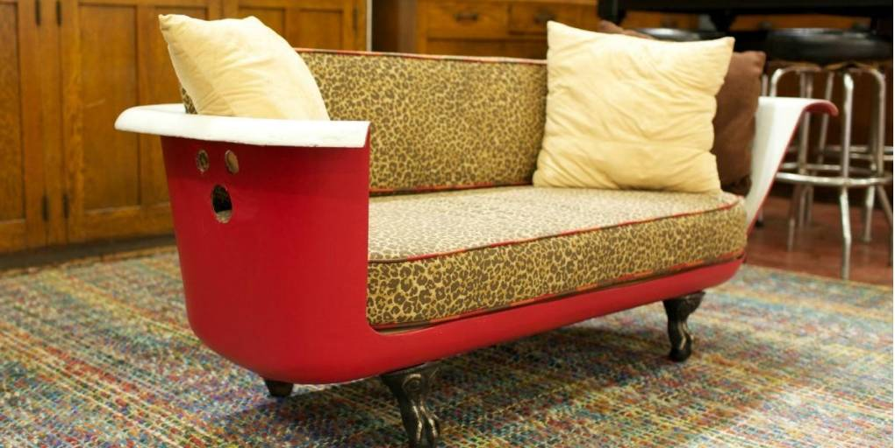
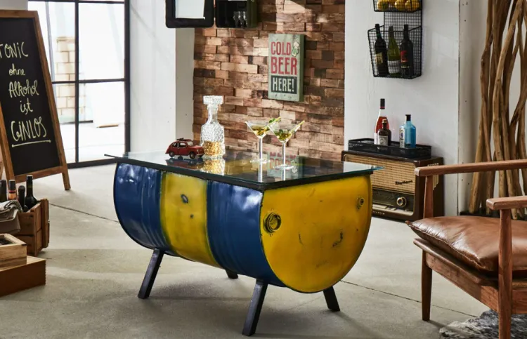

J'ai scanné un vieux jean et du canvas récupéré, puis suivi les suggestions de craft. Résultat : une veste upcyclée unique que je porte fièrement — et que tout le monde me demande d'où elle vient !


Le monde croule sous les déchets. Toi, tu vois du potentiel.
Chaque année, des milliards d'objets finissent à la poubelle alors qu'ils pourraient avoir une seconde vie. WASTE 404 est une application qui scanne tes vieux objets et te suggère comment les combiner pour en créer de nouveaux. Pas besoin d'être ingénieur. Juste de l'imagination — et un téléphone.
Dans un monde où tout est jetable, on choisit de tout réparer.

Identifier les matériaux en un instant
Analyser leur état et leur qualité
Ajouter automatiquement les objets à votre inventaire

Combiner les éléments de votre inventaire
Créer de nouveaux objets à partir de vos ressources
Donner une seconde vie aux matériaux collectés

Mettre en vente les objets scannés d'origine
Vendre aussi ce que vous avez crafté
Trouver des acheteurs pour vos créations

J'ai scanné un vieux jean et du canvas récupéré, puis suivi les suggestions de craft. Résultat : une veste upcyclée unique que je porte fièrement — et que tout le monde me demande d'où elle vient !

Une vieille baignoire traînait dans mon garage depuis des mois. Grâce au craft de Waste404, je l'ai transformée en canapé design. Mon salon n'a jamais été aussi original !


J'ai scanné un baril métal rouillé que personne ne voulait, suivi le tuto craft, et créé cette table basse. Je l'ai revendue en quelques jours — Waste404 m'a fait gagner de l'argent sur un déchet !


Découvrez une nouvelle expérience fluide et optimisée directement sur votre smartphone. Téléchargez gratuitement notre application dès maintenant et rejoignez l'aventure.